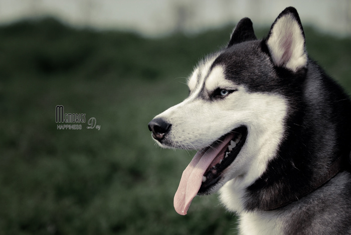

{% load staticfiles %}
{% load mathfilters %}
<!DOCTYPE HTML PUBLIC "-//W3C//DTD HTML 4.01 Transitional//EN"
    "http://www.w3.org/TR/html4/loose.dtd">
<html>
<head>
<style type="text/css">
    	@page {
			size: {{ pagesize|default:"A4" }};
			margin: 2cm;
            margin-top: 2.8cm;
            margin-bottom: 3.3cm;
			size: ;
            background-image: url("/media/img.jpg");

			@frame header {
				-pdf-frame-content:page-header;
				margin-top: 0cm;
				margin-right: 0cm;
				margin-bottom: 0cm;
				margin-left: 0cm;
			}
			@frame footer {
				-pdf-frame-content:footerblock;
				bottom: 0cm;
				margin-left: 0cm;
				margin-right: 0cm;
				height: 0cm;
			}
        }
        *{
			padding: 0; margin: 0;
		}
</style>
{% block content %}
{#    #}
    
    
    
{% endblock %}